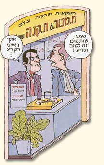

גישור עסקי
- משא ומתן משופר: הגישור העסקי מהווה המשך ישיר של משא ומתן עסקי, במצבים בהם נקלע המשא ומתן לדרך ללא מוצא ונדרש סיוע של מגשר מיומן.
- מיצוי כישורים עסקיים: הגישור העסקי רותם את היכולות המקצועיות, וכישורי המשא ומתן של הצדדים לשם הגעה לפתרון מוסכם של הסכסוך.
- המשא ומתן חסוי: בגישור זה ההסכמים אליהם מגיעים הצדדים אינם מהווים תקדים, והצדדים רשאים לשמור על סודיות ההסכם בהתאם לרצונם.
- הליך יעיל ומהיר: בגישור עסקי גם סכסוכים מורכבים עשויים להגיע לפתרון מוסכם במפגשי גישור ספורים. תוך חיסכון של הליכים משפטיים יקרים וממושכים.
- עלות מינימאלית: שכרו של המגשר מחושב לפי שעות, ואינו יכול להיגזר מסכום הסכסוך או מההסכם שהושג. מגשרי גישור ישראל שוקדים על מנת לסיים את הסכסוך במהירות האפשרית וזוכים לשביעות רצון גבוהה של הצדדים למחלוקות הן על יישוב הסכסוך במקצועיות והן על העלות הנמוכה יחסית הכרוכה ביישובו.
- הצדדים מרוויחים: גישור עסקי מספק תשתית למציאת פתרון של זכייה משותפת בניגוד להליך משפטי שבו לא אחת עלולים הצדדים לאבד זמן, מוניטין, כסף ועוד.
- מעורבות ויצירת תשתית להמשך: גישור עסקי מאפשר לצדדים להיות מעורבים בניסוח ההסכם לשביעות רצונם, תוך שמירה על מערכת יחסים ארוכת טווח.
- לגישור ישראל ניסיון רב בסיוע לפרטים ולחברות להשגת הסכמות ופתרונות לסכסוכים עסקיים.